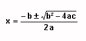

Ejercicios de Lenguaje Java y Entorno de Desarrollo
Proyecto básico en Eclipse
Crear un proyecto en Eclipse de nombre jhd-sesion02. Introducir los siguientes elementos en dicho proyecto:
a) Establecer como directorio de fuentes un directorio src, y como directorio de destino un directorio bin.
b) Crear un paquete es.ua.jtech.jhd.sesion02.personas.
c) Introducir las clases Java que encontrarás en las plantillas de esta sesión en el proyecto. Cada clase deberá copiarse al paquete que corresponda.
d) Introducir en el proyecto la librería JAR que encontrarás en las plantillas de esta sesión. Hacer que esta librería forme parte del classpath del proyecto.
e) Añadidle una nueva clase llamada Prueba en el paquete es.ua.jtech.jhd.sesion02.seres, que tenga el siguiente código (NO COPIEIS Y PEGUEIS EL CODIGO, TECLEADLO A MANO).
package es.ua.jtech.jhd.sesion02.seres;
public class Prueba
{
public static void main(String[] args)
{
// Datos del insecto
Mosca m = new Mosca();
m.nombre();
int edad3 = m.edad() + 2;
System.out.println ("Edad Insecto: " + edad3);
// Datos del animal
Elefante e = new Elefante();
e.nombre();
int edad2 = e.edad() + 5;
System.out.println ("Edad Animal: " + edad2);
// Datos de la planta
Geranio g = new Geranio();
g.nombre();
int edad5 = g.edad();
System.out.println ("Edad Planta: " + edad5);
}
}
f) ¿Qué error de compilación da? Añadir los imports necesarios de forma automática con Eclipse.
g) Ejecutad la nueva clase Prueba.
Cálculo del factorial
Añadid a la clase Factorial.java el código necesario para que calcule el factorial de un número. Intentad hacer tanto la versión recursiva como la iterativa:
- La versión recursiva (en el método factorialRec()) consiste en un método que se llama a sí mismo hasta completar el resultado:
factorialRec(n) = n · factorialRec(n - 1)
Cuando n sea 0 se devuelve 1 y se termina la recursividad.
- La versión iterativa (en el método factorialIter()) consiste en realizar un bucle que vaya acumulando el resultado.
Comprobad que los programas devuelven lo mismo, dejando en el main() el código necesario para ver el resultado de los factoriales de 30, 5, 1 y 0. Para ello crearemos un array con todos estos datos de entrada que se van a probar:
int entradas [] = { 30, 5, 1, 0 };
Recorrer este array con un bucle for sin utilizar ninguna variable para recorrer sus índices. Para cada elemento del array ejecutaremos ambas versiones del factorial y mostraremos el resultado en la consola.
Ecuación de segundo grado (*)
Añadid a la clase Ecuacion.java el código necesario (dentro del método solucion(...)) para que resuelva una ecuación de segundo grado ax² + bx + c = 0:

El método solucion(...) devuelve un array de dos doubles, que son las dos soluciones al sistema. Si no hubiese solución, se devolvería null.
public double[] solucion(...)
{
double []sol = new double[2];
... //Codigo para resolver el sistema
return sol;
}
Probad que el ejemplo funciona para cada uno de los casos:
- a = 4, b = 1, c = -6
- a = 4, b = 1, c = 6
- a = 0, b = 3, c = -1
- a = 2, b = 0, c = -1
- a = 2, b = 2, c = 0
Algunos no tienen soluciones reales, otros tienen coeficientes cero que pueden dar problemas al dividir, etc. Controlar o no cada uno de estos casos se deja como optativo.
Clases abstractas y herencia
Vamos a ver un ejemplo de clases abstractas y herencia. Se tiene una clase abstracta Persona, de la que hereda una clase Hombre para definir los métodos abstractos. Además, se tiene otra clase Anciano, que hereda de Hombre para modificar el valor de alguno de esos métodos. La clase principal del grupo es Ej4, que se encarga de ejecutarlo todo. Se pide:
a) Probar a ejecutar la clase Ej4 y comprobar el resultado producido.
b) Convertid el ejemplo para utilizar interfaces en lugar de clases abstractas. Es decir, haced que Persona sea una interfaz (para ello no deberá implementar ningún método, sino dejarlos definidos).
c) Indicad los cambios que sufren las clases Hombre y Anciano con eso. Probad el ejemplo con los cambios y comprobad que el resultado que devuelve es el mismo.
d) Utilizar el menú Refactor de Eclipse para cambiar el nombre de la interfaz Persona por SerHumano. Comprobar que Eclipse ha actualizado automáticamente la clase Hombre para que herede de SerHumano en lugar de Persona.
CVS
Vamos a desarrollar un videojuego implementado en Java. Se pide:
a) Crear un nuevo proyecto Java en Eclipse con el nombre jhd-sesion02-panj. Crear dentro de este proyecto una estructura de directorios en la que podamos tener organizados los diferentes elementos de configuración de nuestro proyecto. Introduciremos un fichero txt en cada directorio en el que se indicará el tipo de elementos de configuración que deberemos introducir en él.
b) Crear un repositorio CVS y compartir el proyecto en él. Subiremos la estructura de directorios al CVS (commit) y la etiquetaremos como versión v0000-20080402.
c) Introducir cada uno de los elementos de configuración contenidos en el subdirectorio v1 de jhd-sesion02-cvs en el directorio del proyecto que corresponda.
d) Subir la aplicación al repositorio CVS (commit), y etiquetar la versión actual como v0100-20080422.
e) Ahora que tenemos una versión estable de la aplicación, vamos a crear una rama con nombre b0100.
f) En este momento entra una segunda persona al desarrollo del juego. Esta persona estará trabajando en un ordenador al que llamaremos puesto B (hasta el momento hemos estado trabajando en el puesto A). Si no contamos con una segunda máquina física, podemos simularla creando un nuevo Workspace de Eclipse. Bajamos el proyecto (checkout) en el puesto B.
g) Continuamos el desarrollo principal de la aplicación en el puesto A. Vamos a crear una nueva versión 2.0 del juego en la que pueda verse a pantalla completa pudiendo elegir entre diferentes modos gráficos. Para ello se deberá cambiar en la rama HEAD la clase Panj por la versión de esta clase que se encuentra en el subdirectorio v2 dentro de jhd-sesion02-cvs. Tras hacer estos cambios, los subimos al servidor (commit).
h) Ahora mismo en el desarrollo principal de la aplicación tenemos una versión no ejecutable de la misma. Hemos encontrado un bug en la versión 1.00 que ya está lanzada (released), que consiste en que si nos movemos a la derecha el personaje puede salirse de los límites de la pantalla. Como la versión 2.00 está a mitad de desarrollo y no podrá ser lanzada a corto plazo, vamos a corregir este bug en la versión 1.00 para poder lanzar inmediatamente una versión corregida de la aplicación. Para ello, desde el puesto A vamos a corregir el bug en la rama b0100, modificando la siguiente línea de la clase Fase (línea 150):
if (gc.et.estaPulsada(EntradaTeclado.K_DER) &&
pers_bb.x < Panj.WIDTH) {
Por esta otra:
if (gc.et.estaPulsada(EntradaTeclado.K_DER) &&
pers_bb.x < Panj.WIDTH - PersSprite.WIDTH) {
Subimos los cambios al servidor (commit), y etiquetaremos esta nueva versión con v0101-20080423.
i) Mientras tanto, en el puesto B vamos a terminar el desarrollo de la versión 2.00. Para ello, lo primero que debemos hacer es actualizar en nuestra máquina los cambios que hayan hecho el resto de desarrolladores (update). Siempre deberemos hacer esto antes de empezar a trabajar, para así asegurarnos de estar trabajando sobre las versiones más recientes de los ficheros. Una vez actualizados los cambios, copiamos el fichero DisplayModeSelect (que se encuentra en el directorio v2 de las plantillas) a nuestro proyecto (en la rama HEAD). Ahora esta nueva versión ya es ejecutable. Sin embargo, antes de lanzarla deberemos corregir en ella todos los bugs que encontramos en la 1.00 y que habíamos solucionado en la rama b0100. Para hacer esto juntaremos los cambios (merge) de la rama b0100 con la rama principal.
j) Para terminar, probaremos que esta última versión funciona correctamente, la subiremos al servidor (commit), y la etiquetaremos con v0200-20080506. En el puesto A volver a la rama de desarrollo principal y actualizar los cambios. De esta forma tendremos en ambos puestos la última versión de la aplicación.
k) Volver a la versión v0100-20080422. ¿Podemos realizar cambios en esta versión y subirlos al servidor? ¿Por qué?